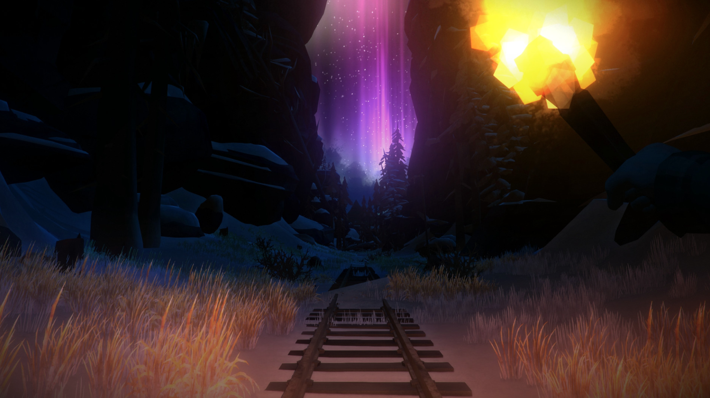
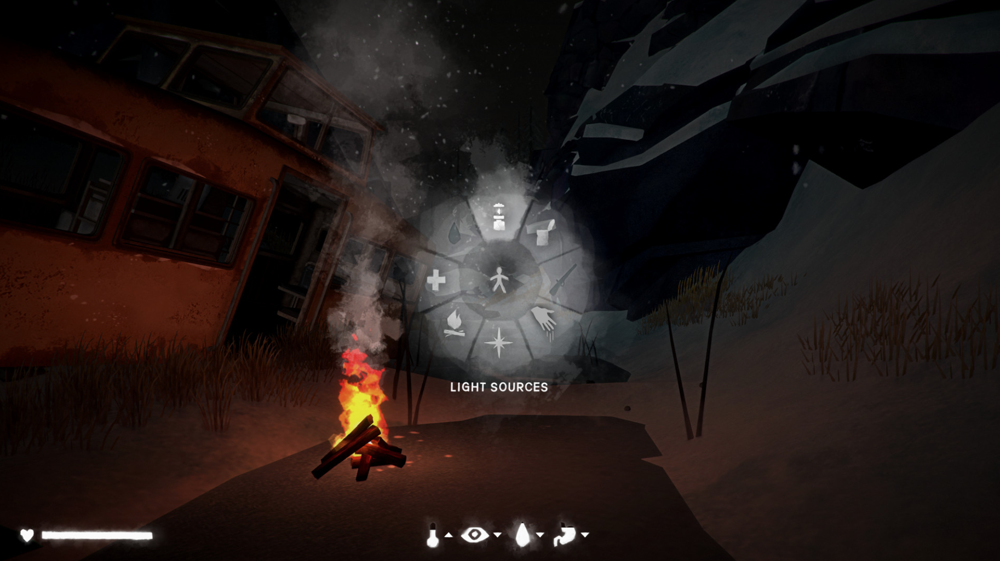

<style>

ul{
text-align: center;
font-size: 22px;
margin: 10px;


}
a{
  color: white;
  text-decoration: none;
  margin: 10px;
}
h2{
text-align: left;
  color: black;
  font-size: 30px;
}
header{


}
a{
  color: black;
  text-decoration: none;
  margin: 10px;
}
body{
  background-image: url(" ");
  background-repeat: no-repeat;
  font-family: 'Raleway', sans-serif;
    background-color:  #DDDDDD;


}

#logos{
  margin: 10px;
  text-align: center;
  margin-top: 20%;
}

#h2{
  margin-top: -55px;

}

div.bg{
text-align: center;
margin-top: 175px;
padding:none;
margin: none;


}
h3{
  margin-right: 30%;
  color: black;

}
ul{
  font-size: 24px;
}
p{
  font-family: 'Bellefair', serif;
  font-size: 24@x;
}

</style>
 <DOCTYPE html>
   <link href="https://fonts.googleapis.com/css?family=Raleway:300" rel="stylesheet">
     <link href="https://fonts.googleapis.com/css?family=Alegreya" rel="stylesheet">
        <link href="https://fonts.googleapis.com/css?family=Bellefair" rel="stylesheet">

<head>


  <script type="text/javascript">
      if(screen.width>-2500) {document.write("<style>body{zoom:100%;}.hand_ipad img{top:114px}.hand_ipad iframe{height:275px;}</style>");}


  </script>

<body>
  <div id="h2">
    <h2><a href="file:///Users/chrisarrieta/Desktop/Personal%20web%20page/landing%20page.html"><br>logo here</a></h2>

  </div>
  <header>


    </id>

    <ul>
        <nav>

          <a href="file:///Users/chrisarrieta/Desktop/Personal%20web%20page/landing%20page.html"></a>
           <a href="file:///Users/chrisarrieta/Desktop/Personal%20web%20page/game%20reviews.html">Reviews</a>
           <a href="file:///Users/chrisarrieta/Desktop/Personal%20web%20page/About.htm">News</a>


</ul>
</a>
</nav>
         </header>


          <div class="bg">
            <h3> The Long Dark Review</h3>
          <br>


          <h4>
            The long Dark Initial released back in september 22, 2014<br>
            The Long dark is a first person survival game developed and published by Hinterland Studio.<br>
            The player assumes the role of a crash-landed bush pilot who must survive the frigid Canadian wildness after a gobal disaster.<br>

            <br>

            The Long Dark has two modes, Story mode & survival mode,
            well talk about the story mode later, let's talk about the survival mode <br>
            this game gets survival mode righ, If your looking to spend many hours into a game<br>
            the long dark is the perefect game for you. The Long Dark allows you to explore the wildness
            with no limits, You will get lost in the wildness and probbly die.<br>

            <br>


            During a snow storm in The Long Dark, you don't want to be outside you ust wait the storm to pass <br>
            before you can exporle the world beacuse your chacater will die from the cold, <br>
            Not Every building you search will have items like food,water,clothes are hard to come by during a building search.<br>
            Ypu will spend many hours trying to survival and looking for food and water but during the process,<br>
            you may come arcoss wildlife,which may attack you if you don;t keep your distance<br>
            however, If yu ahve a weapon, you can attack the wildlife and eat them beacuse will lose a lot of calories during the process.<br>
            This game has one major issure, You can not jump over anything, which  might not sound lke a big deal but <br>
            When you are getting chase by a wild animal you wish you can jump in this game.<br>

            <br>


            Is the Long Dark worth to buy? The simple answer is YES is a worth a buy during a sale at $8.74 but is not <br>
            worth a buy at $34.99. There are other better survival games out there at cheaper price<br>
            that do the same or better game mechanics better than The Long Dark.<br>
            The Long Dark has some or one of best graphics of a survivalg game,<br>
            The open world is beautiful and realistic but not too realistic but<br>
            still think outside the box to surive the cold.

<ui>
            <li>The cons<br></li>
            <li>can't jump<br></li>
            <li>doesn't alert you when you need to eat.<br></li>
          <li>  hard to find items like food,water,clothes.<br></li>
            <li>Easy to get Hyperthermie<br></li>

            <li>The pro's<br></li>
            <li>major open world.<br></li>
            <li>beautiful graphics.<br></li>
            <li>wildlife<br></li>
          </ul>


          </h4>
        </div>

          </div>
          </form>


   </head>


</DOCTYPE html>
